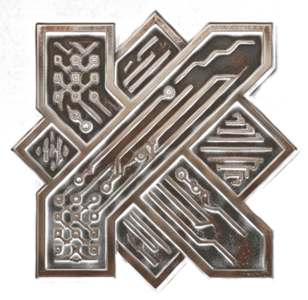

Cabina 237 · Ponte G · Protocollo di riespansione completato

Accesso autorizzato
Complimenti. Avete pronunciato la parola giusta, con la giusta convinzione, e il giubbotto si è riespanso con un elegante «pop» idraulico. Pochi arrivano fin qui. Quasi nessuno ci arriva di proposito.
Da questo punto il sito smette di vendere giubbotti.
Trasmissione riservata · canale 7
Trasmissione in arrivo. Il segnale non è ancora stato autorizzato dal Triumvirato: tornate a controllare, di Sabedì.
Nosce te ipsum, baby!
Quello che avete trovato qui resta tra voi e questa cabina.